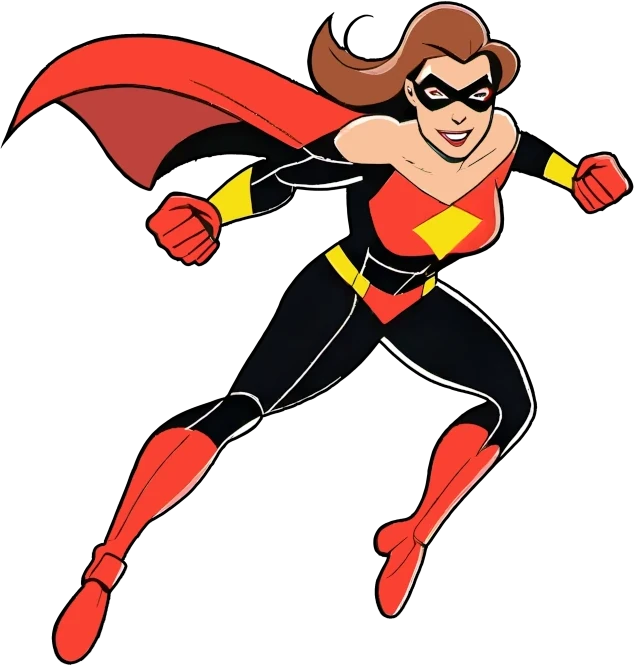

Super-Zéros : Les médias
Super-Zéros : Les médias
Arrière-plans, style original
Asbestos
Metropolis
Monopolis
Montréal
New-York
Paris
Québec
Arrière-plans, style cartoon
Paris
Asbestos
Lutèce
Metropolis
Miami
Monopolis
Moscou
Munich
Les personnages
Plante-Verte
Plante Verte est l'héroïne de la nature et de l'environnement, capable de canaliser la puissance des plantes pour protéger la planète. Son costume vert symbolise son lien profond avec la flore, et ses capacités lui permettent de manipuler la végétation pour repousser ses ennemis ou venir en aide aux plus vulnérables.
Belle-Maman
Belle-Maman est une héroïne qui ne plaisante pas avec l'ordre et la justice. Avec son costume tricolore rétro en rouge, jaune et bleu, orné d'une étoile fièrement affichée sur la poitrine, elle est la gardienne des quartiers qu'elle protège à coups bien placés.
Siffleux
Siffleux est le héros de la construction et des solutions pratiques, toujours prêt à bâtir un avenir meilleur. Vêtu d'un costume rouge et jaune flamboyant et coiffé d'un casque de chantier jaune, il est l'incarnation de la force et de la détermination. Avec une clé dans une main et une brique jaune dans l'autre, Siffleux est prêt à affronter tous les obstacles.
Bob
Bob est le héros de la construction et de l'ingéniosité, un véritable maître des outils avec un sourire contagieux et une attitude toujours positive. Arborant une combinaison jaune éclatante et un casque assorti, il est prêt à relever tous les défis. Ses deux clés à molette sont ses armes de prédilection, symbolisant sa polyvalence et son expertise.
Bobette
Bobette est la reine du bricolage et de la réparation ! Armée de ses outils géants, elle peut réparer, assembler ou démonter tout ce qui croise son chemin. Avec son casque jaune de chantier et son sourire imperturbable, elle n'hésite pas à en découdre quand il s'agit de remettre les choses en état. Son super-pouvoir ? Transformer n'importe quel outil en arme redoutable ou en gadget multifonctions.
Vélaire
Dotée d'un pouvoir de vol prodigieux, Vélaire peut traverser les cieux en un éclair, sa main fermée reflétant son implacable volonté de vaincre, et sa main ouverte symbolisant l'espoir qu'elle apporte à ceux qu'elle sauve. Elle ne recule devant aucun danger et fait face à l'injustice avec une détermination infaillible.
CrotteMan
Crotte-Man est le héros dont personne ne veut, mais que tout le monde finit par adorer ! Avec son sourire malicieux et son costume marron assorti à sa cape, il n'a pas peur de se salir les mains pour sauver la situation ! Son arme secret ? Une capacité unique à semer la confusion parmi ses ennemis grâce à ses attaques...
Agent Blaze
Agent Blaze est une super-héroïne élégante et puissante, combinant classe et force dans un style impeccable. Avec sa longue chevelure rousse flamboyante et son costume bleu formel, elle est toujours prête à affronter n'importe quelle situation, qu'il s'agisse de réunions cruciales ou de combats épiques.
Eau-Dure
Eau-Dure est un super-héros imposant et sérieux, prêt à sauver le monde avec une détermination inébranlable. Avec ses cheveux bruns et son masque mystérieux, il incarne la force tranquille et le courage face au danger. Eau-Dure est le héros que personne n'ose sous-estimer, un protecteur stoïque avec un cœur de guerrier.
Capitaine Brise
Capitaine Brise est un super-héros léger et rapide, capable de manipuler les courants d'air avec son inséparable vire-vent. Toujours optimiste et prêt à aider, il apporte une touche d'humour et de légèreté à chaque mission. Avec son grand sourire et son allure enfantine, il est le champion des brises douces et des rafales surprises.
L'Érudit
L'Érudit est un super-héros à l'intellect acéré et à la force impressionnante. Avec ses cheveux noirs en bataille et son masque distinctif, il incarne le mélange parfait de sagesse et de puissance. Revêtu d'une cape qui flotte majestueusement derrière lui, il dégage une aura de mystère. Dans ses mains, il tient un livre ancien, qu'il utilise comme une arme.
Collector
Collector est un super-héros audacieux et astucieux, déterminé à faire régner l'ordre dans la ville. Il est facilement reconnaissable grâce à son emblème en forme d'étoile. Toujours prêt à se lancer dans l'action, il prouve que la justice se trouve dans les détails, et qu'un véritable héros est celui qui veille à ce que chacun respecte les règles du jeu.
Rhino-Féroce
Rhino-Féroce est un super-héros audacieux, arborant un sourire confiant et une énergie contagieuse. Toujours prêt à charger dans la bataille avec son imposante carrure musclée, il porte fièrement une cape flottante et un masque mystérieux. Rhino-Féroce combine puissance brute et charme intrépide, un héros avec l'intensité d'un rhinocéros et le cœur d'un champion.
Pro-Pulsion
Pro-Pulsion est un super-héros dynamique et plein d'énergie, prêt à s'élancer vers l'action avec une détermination inébranlable. Avec ses cheveux bruns et son sourire confiant, il dégage une aura de charisme et de force. Vêtu d'un costume saisissant avec des bottes bleues, il est toujours prêt à décoller vers de nouvelles aventures. Il est déterminé à faire régner la justice et à défendre ceux qui en ont besoin.
Arachnys
Arachnys est une super-héroïne redoutable, vêtue d'un costume rouge et noir avec des accents jaunes qui rappellent ses origines mystérieuses liées au monde des araignées. En volant gracieusement à travers les airs grâce à sa cape, elle utilise ses capacités d'agilité extrême, de force surhumaine, et de réflexes semblables à ceux d'une araignée pour combattre le crime.
Super-Menton

Super-Menton est un super-héros au sourire inébranlable et à la détermination à toute épreuve. Avec son impressionnant menton proéminent Super-Menton est toujours prêt à se lancer dans l'action, utilisant son incroyable force et sa résilience pour combattre le mal et protéger les innocents.